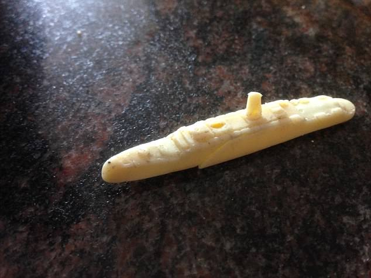

Lego pieces take from 100 to 1300 years to biodegrade
Biodegradation takes centuries
Plastics usually photodegrade into microplastics
They never really go
These plastic bricks have had a major part to play in almost every kid's life. They are fun to play with , easy yet challenging to build and durable. But I ask you all , is there such a need for durability , that a plastic boat made in 1958 was found in the Arctic circle in 2017 ?

The plastic boat that was given for free along with a packet of Sugar Puffs in 1958.
2.16 million LEGO elements are moulded every hour. If stacked on top of one another, the pieces would form towers reaching all the way from the Earth to the Moon.They are manufactured at such magnitudes , that there are 62 bricks for every person on the planet. With so many bricks manufactured , one can only imagine how many of those ended up in the sea.
Scientists anaylsed LEGO samples washed up on the shore . These samples , with mild discolouration and fractures , turned out to be pieces from kits made in the 1970's and 80's. With increasing awareness and pressure on LEGO , it has decided that their products will be 100% sustainable by 2030.